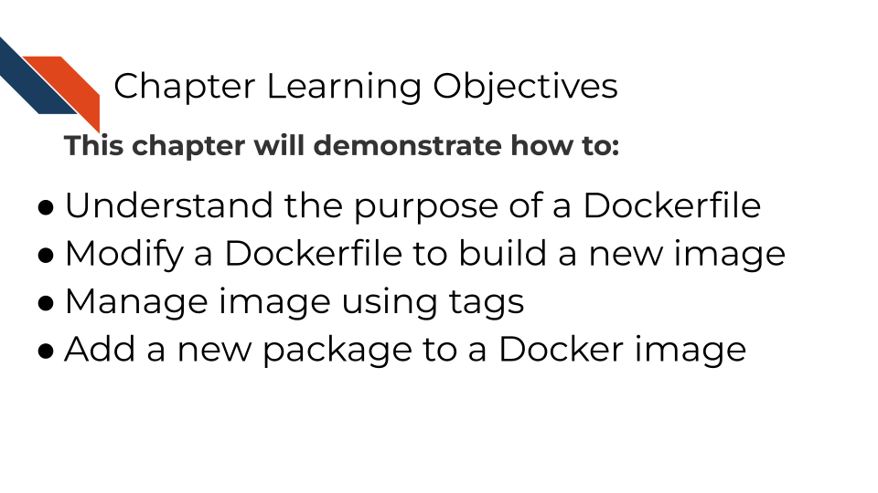

5 Modifying Containers
A Dockerfile is a recipe for how to build a docker image. The best way to learn to write Dockerfiles is to start off with one that is already written and modify it for your needs.
5.1 Activity Instructions
Open up the Dockerfile in the activity-files folder.
You’ll notice we have this at the top for you:
FROM cansav09/practice-image:1This means we’re going to take the existing image called, cansav09/practice-image:1 and build on to it. This image will be our base. There are so many Docker images out there that it might be that someone has already created a docker image with most of the functionality you need for your project.
The trick is to find a base image that has most of the software things you need, but not extra stuff you don’t need. You want to make your image have all the stuff it needs but also be as small as possible. Images that are overly big are harder to deal with and to download.
There are (at least) two strategies you can take:
- Start with the smallest images possible and add only what you need for the specific case you are working on.
- Make more than one docker image for each use case you have. Don’t make one really large docker image you use for everything, that will take forever to pull from the internet or forever to build.
Let’s take a look at a Dockerfile.
5.1.0.1 Step 1: Use any file editor to open up the Dockerfile
Open the file to take a look at it with any text editor.
5.1.0.2 Step 2: Change your working directory to activity-files
Now in your Command Prompt or Terminal navigate to the activity-files folder. Use cd and don’t forget to use tabs so you don’t have to spell everything exactly.
5.2
5.2.1 Docker
5.2.1.1 Step 3: Build the image from the Dockerfile
With activity-files as your working directory, run the following:
docker build . -t cool-new-imageOptionally you could call this from somewhere else and use the -f option to specify the file path to the Dockerfile. But in the scenario above it just grabs the Dockerfile in our working directory.
If your image builds properly you should see something like this:
5.2.1.2 Step 4: Inspect new image!
Let’s see if we have an image!
docker image lsAnd if you check Docker desktop you should now see this image show up in your list:
5.2.1.3 Step 5: Run the new image
Let’s try running that image.
docker run cool-new-image5.2.1.4 Step 6: See the minor difference!
We should have a message: Yay! I built a Docker image pop up upon building the image. Not super useful but we can see how we’ve edited the original image.
5.2.1.5 Step 7: Edit the Dockerfile so it has the installation step for rmarkdown package and remove the CMD step
For anything we need to run in the image we are building we need to use the RUN command followed by the installation steps we’d need.
Open up the file called Dockerfile in activity-files.
Copy and paste this into your Dockerfile below where it says # Add a new package here so we can add the rmarkdown package.
RUN Rscript -e "options(warn = 2);install.packages('rmarkdown', \
repos = 'https://cloud.r-project.org/')"remove the CMD line.
Save your edited Dockerfile.
5.2.1.6 Step 8: Re-build now that we’ve edited the Dockerfile
Now re-run docker build (or podman build) as you did in the previous section. This time we’ll add a versioning tag using : in the -t option.
docker build . -t cool-new-image:2If all built successfully, you should see a message like:
=> exporting to image 0.0s
=> => exporting layers 0.0s
=> => writing image sha256:ayuahgfuiseohfauwheufhauwihefuahweufhawfbuibe 0.0s
=> => naming to docker.io/library/cool-new-image:25.2.1.7 Step 9: Run container from cool-new-image:2
Now let’s retry running the script from here but we will need to specify the volume again! Make sure that you are in the top level containers-for-scientists-sandbox-main directory.
First run the container using the 2 image:
docker run -v $PWD:/home cool-new-image:25.2.1.8 Step 10: Re-Retry calling the script
Run docker ps or podman ps can get you the container ID. Or look on your Docker Desktop.
Try running the script using the following command:
docker exec -it <REPLACE_WITH_CONTAINER_ID> bash /home/run_analysis.sh5.2.2 Podman
5.2.2.1 Step 3: Build the image from the Dockerfile
With activity-files as your working directory, run the following:
podman build . -t cool-new-imageOptionally you could call this from somewhere else and use the -f option to specify the file path to the Dockerfile. But in the scenario above it just grabs the Dockerfile in our working directory.
5.2.2.2 Step 4: Inspect new image!
Let’s see if we have an image!
podman image ls5.2.2.3 Step 5: Run the new image
Navigate back to your Docker desktop and the images window or run docker ps or podman ps. If your image built successfully, you should see a new image in your list! Let’s try running that image.
podman run cool-new-image5.2.2.4 Step 6: See the minor difference!
We should have a message: Yay! I built a Docker image pop up upon building the image. Not super useful but we can see how we’ve edited the original image.
5.2.2.5 Step 7: Edit the Dockerfile so it has the installation step for rmarkdown package and remove the CMD step
For anything we need ran in this image we are building we need to use the RUN command followed by the installation steps we’d need.
Open up the file called Dockerfile in activity-files. Copy and paste this into your Dockerfile below where it says # Add a new package here so we can add the rmarkdown package.
RUN Rscript -e "options(warn = 2);install.packages('rmarkdown', \
repos = 'https://cloud.r-project.org/')"AND remove the CMD line. Save your edited Dockerfile.
5.2.2.6 Step 8: Re-build now that we’ve edited the Dockerfile
Now re-run docker build (or podman build) as you did in the previous section. This time we’ll add a versioning tag using : in the -t option.
podman build . -t cool-new-image:2If all built successfully, you should see a message like:
=> exporting to image 0.0s
=> => exporting layers 0.0s
=> => writing image sha256:ayuahgfuiseohfauwheufhauwihefuahweufhawfbuibe 0.0s
=> => naming to docker.io/library/cool-new-image:25.2.2.7 Step 9: Run container from cool-new-image:2
Now let’s retry running the script from here but we will need to specify the volume again!
First run the container using the 2 image:
podman run -v $PWD:/home cool-new-image:25.2.2.8 Step 10: Re-Retry calling the script
Run docker ps or podman ps can get you the container ID. Or look on your Docker Desktop. Try running the script using the following command:
podman exec -it <REPLACE_WITH_CONTAINER_ID> bash /home/run_analysis.sh5.3 Essential Docker commands:
Now that you’re familiar with the basics of Dockerfiles, let’s dive into some more
FROM is one of the main commands that a Dockerfile can take as described by their documentation.
Now you are also familiar with CMD which runs something when the container is built
FROM creates a layer from another Docker image. CMD specifies the default command to run when a container is started from an image. RUN executes commands during the build process of the Docker image. COPY adds files from your Docker client’s current directory.
Next let’s use RUN to add a package to our image.
5.4 Templates for adding packages!
Starting off with your example Dockerfile, we will practice adding another package and re-build the docker image with a new package.
Note that spacing is important as well as having a \ at the end of each line if the command is continuing.
To add R packages from CRAN, you can use this kind of format:
RUN Rscript -e "install.packages( \
c('BiocManager', \
'R.utils', \
'newpackagename'))"To add an R package from Bioconductor, you can use this kind of format:
RUN Rscript -e "options(warn = 2); BiocManager::install( \
c('limma', \
'newpackagename')To add a Python package using pip, you will first need to make sure you have pip installed using:
Install pip:
RUN apt-get update && apt-get install -y --no-install-recommends \
python3-pipThen you can use pip install to install packages with the following format:
RUN pip3 install \
"somepackage==0.1.0"There are so many things you can add to your Docker image. (Picture whatever software and packages you are using on your computer). We have gotten you started with a simple example of how to write a Dockerfile and build a docker image from a base image plus some additional packages. But, what you put on your Docker image will be up to you.
To figure out how to add something, a good strategy is to look for other Dockerfiles that might have the package you want installed and borrow their RUN command. Then try to re-build your Docker image with that added RUN command and see if it builds successfully. Another strategy is to enter an interactive terminal session on your base image, work out the required commands for installing the missing tool/package, then add those RUN commands to your Dockerfile.
And lastly, make sure that whatever changes you make to your Dockerfile, that you add it to your GitHub repository!